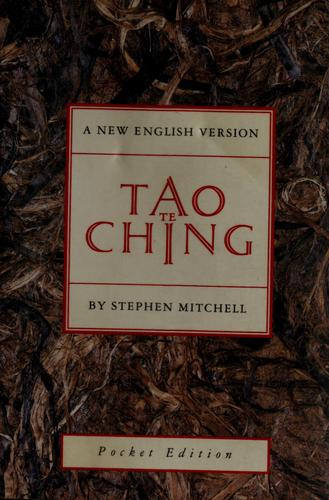

《道德经》是中国哲学史上篇幅最短却影响最深远的文本之一。全书仅约五千汉字，分八十一章，相传为春秋时期周王室守藏史老子（约公元前六世纪）所作。按照传统记载，老子在离开周都之际，应函谷关守令尹喜之请，留下了这五千字的著述，随后出关，行踪成谜。无论作者身份与成书年代的学术争议如何，这部文本在中国思想史上的地位无可动摇——它是道家哲学的根本经典，以极度凝练的语言呈现了一套关于宇宙本原、社会治理与个人处世的完整世界观。"道"，是万物运行的根本规律，不可名状，却无处不在；"德"，是个体或事物与道相符的内在品质与外在表现。《道德经》从未试图给"道"下一个精确定义，而是用大量的悖论、比喻和否定性表述，引导读者逼近一个只能感知、无法言说的真理核心。
全书的论述在政治哲学、伦理观与宇宙论之间自由穿行。核心概念"无为"并非消极不作为，而是一种顺应事物内在规律、不强加人为意志的行动方式。"曲则全，枉则直，洼则盈，弊则新"——以柔克刚的辩证逻辑贯穿全书，水的意象反复出现：水利万物而不争，处众人之所恶，恰恰因此接近于道。在政治层面，老子理想中的治理是"圣人不积"、"为学日益，为道日损"，权力越少自我彰显，越能实现持久的秩序与稳定。在个人修养层面，书中强调知足、知止、不与人争，以及对"名"与"利"的适度疏离。这些观念与儒家强调积极入世、礼乐秩序的路线形成鲜明对比，共同构成了中国传统思想的两极张力。
《道德经》在西方世界的传播极为广泛，现有英译版本超过两百五十种，是除《圣经》外被翻译成其他语言次数最多的书籍之一。哲学家海德格尔在研究存在主义问题时，与中国学者合作翻译了部分章节，认为老子对"无"与"有"的辩证处理与他自己的思路存在深刻呼应。物理学家尼尔斯·玻尔（Niels Bohr）将太极图印在自己的家族纹章上，暗示他在量子力学的互补原理中看到了与《道德经》相通的逻辑。查理·芒格虽以西方多学科框架著称，却在多次谈话中认可东方古典智慧对决策思维的价值，他引用过的"管理事务于其混乱之前"这一来自老子的论断，与他自己关于"反转思考"（inversion）的方法论高度一致。
对于商业与投资领域的读者，《道德经》的价值在于它提供了一种与主流决策文化截然不同的反向视角。当代商业文化崇尚主动进攻、强力扩张与高能见度的领导风格，而老子提醒人们，那些最持久的力量往往来自不显山露水的积累、对时机的耐心等待，以及对过度干预的克制。"为学日益，为道日损，损之又损，以至于无为"——这句话用在投资上，可以理解为：真正的成熟不是增加更多的分析工具与预测框架，而是减少不必要的噪声干扰与频繁操作。芒格所推崇的"坐等好球"，与老子的"知常曰明"在精神上遥相呼应。五千字的文本，字字可以细读，反复咀嚼，不同的人生阶段往往会读出截然不同的层次。